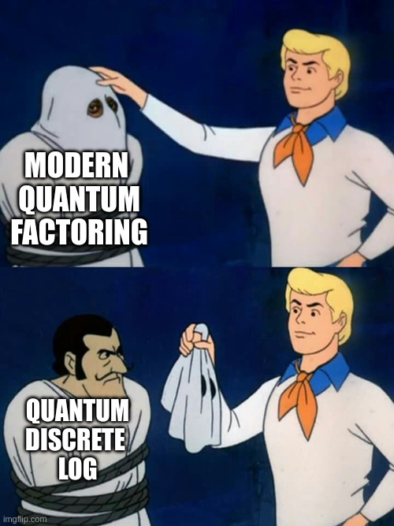
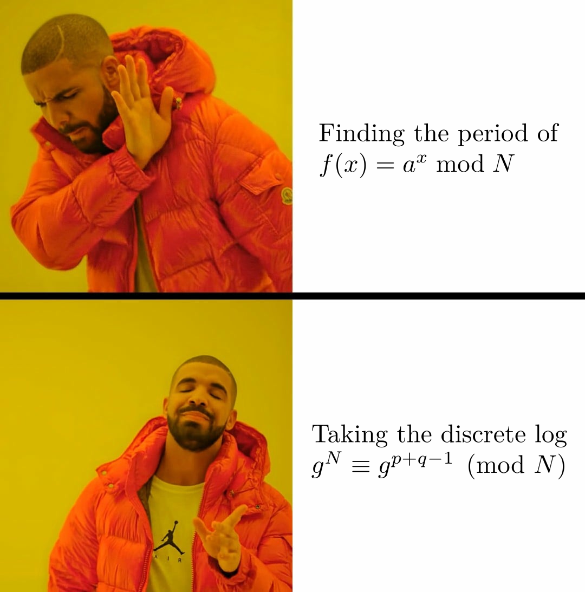

Part of: A Series of Unfortunate Assumptions
I frequently hear conversations like, “What do we do if factoring is broken tomorrow?”
The answer to that question itself is for a different blog post, but here I want to discuss the focus on factoring. Factoring seems to dominate the conversation about quantum computers breaking cryptography, whether in casual conversations, in the press, or as a test case for quantum compilation schemes or quantum error correcting codes. But is this focus justified? Let’s look at it from a couple perspectives.
Comparing discrete log and factoring
Use in classical cryptography
On the modern internet, what do people actually use in practice?
As a test case, let’s compare the classical efficiency of two digital signature schemes: one that relies on the hardness of the elliptic curve discrete logarithm problem, and another that relies on the hardness of RSA factorization.
| Scheme | Vulnerable problem | Public key size (bytes) | Signature size (bytes) | Time to sign (arb. units) | Time to verify (arb. units) |
|---|---|---|---|---|---|
| Ed25519 | EC discrete log | 32 | 64 | 0.15 | 1.3 |
| RSA-2048 | RSA factoring | 272 | 256 | 80 | 0.4 |
We see that by almost all metrics, the elliptic curve signatures are more efficient.
This pattern holds up in other applications, too: in general schemes relying on elliptic curve discrete logarithm are more efficient for classical computers. Thus on the modern internet, elliptic curve discrete log is a more widely relied upon hardness assumption.
Cost of quantum attacks
OK, but maybe factoring is more vulnerable to quantum attack, and that’s why everyone talks about it?
Let’s see:
| Problem | Logical qubits | Logical Toffoli gates |
|---|---|---|
Discrete log on curve secp256k1 1 |
~ 1200 | ~ 70 million |
| Factoring RSA-2048 2 | ~ 1400 | ~ 7,000 million |
OK, so elliptic curve discrete log also has cheaper quantum circuits.
Comparison summary
| Most attention given | Most widely used | Cheapest quantum circuits |
|---|---|---|
| Factoring | Discrete log | Discrete log |
We’ve been giving attention to the problem that is less widely used and more expensive.
That is surely a road to ruin!
Factoring as discrete log
There’s another part to the story too:

Modern factoring algorithms are just discrete log algorithms under the hood. Here’s why.
In a paper from 2017, Martin Ekerå and Johan Håstad made the following observation. Consider an RSA integer \(N=pq\), where \(p\) and \(q\) are primes. For the vast majority of integers \(g<N\), \[ g^{N+1} \equiv g^{p+q} \pmod N \] This is because the order of \(g\) must be a divisor of \(\phi(N) = (p-1)(q-1)\), and \((N+1) \bmod (p-1)(q-1) = p+q\).3
Knowledge of the sum \(p+q\) along with \(N\) is sufficient to find the factors \(p\) and \(q\). This suggests the following algorithm to factor RSA integers (🖥️=classical step, ⚛️=quantum step):
- 🖥️ Choose some integer \(g\) between 1 and N.
- 🖥️ Compute \(x = g^{N+1} \bmod N\).
- ⚛️ Compute the discrete logarithm \(\mathsf{dlog}_g(x) = p+q\).
- 🖥️ Use \(p+q\) and \(N\) to solve for \(p\) and \(q\).
Note that this is a discrete log over \(\mathbb{Z}^*_N\), the multiplicative group of integers mod N, not over an elliptic curve group. So the quantum circuit isn’t the same as the one mentioned above, but it isn’t necessarily worse (we will get to that later, it’s actually probably better).
Overall the result is that we can factor \(N\) via the quantum algorithm for discrete logarithms.
But is this helpful?
Aside: reducing the period’s size reduces the cost of quantum period finding
Shor’s quantum algorithms for both factoring and discrete logarithm use the core subroutine of quantum period finding. In quantum period finding, as a general statement, a smaller period means smaller quantum cost.
Shor’s original idea was to factor by finding the period of the function \(f(x) = a^x \bmod N\). The period of this function is with high probability \(O(N)\).
But with Ekerå and Håstad’s 2017 idea, we use the quantum algorithm for discrete logarithms. The size of the period is roughly the size of the secret exponent we are computing. In this case, that secret exponent is \(p+q\), which is size \(O(\sqrt{N})\).
Ekerå-Håstad ’17 reduces the size of the period for factoring RSA integers by a factor of \(O(\sqrt{N})\). This makes the circuits cheaper, and there is no apparent downside, so essentially all modern quantum RSA factoring constructions use this trick.
Drake gets it:

Summary
Elliptic curve discrete log…
- is more widely relied upon than factoring, and
- has cheaper quantum circuits.
Furthermore, modern circuits for RSA factoring are discrete log circuits anyway!
Yet factoring gets the majority of the attention.
Footnotes
This breaks down if the order of \(g\) is smaller than \(p+q\), but accidentally picking a \(g\) in such a small subgroup of \(\mathbb{Z}^*_N\) is so unlikely that we can ignore it.↩︎